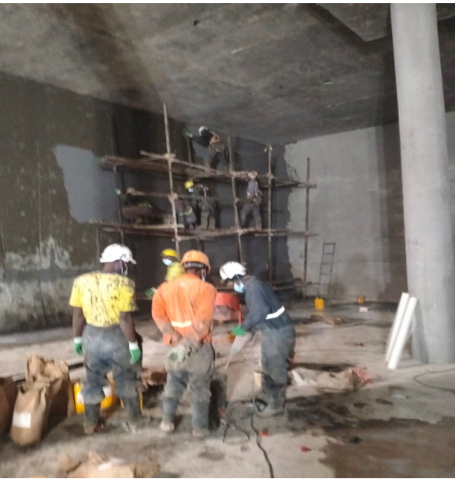
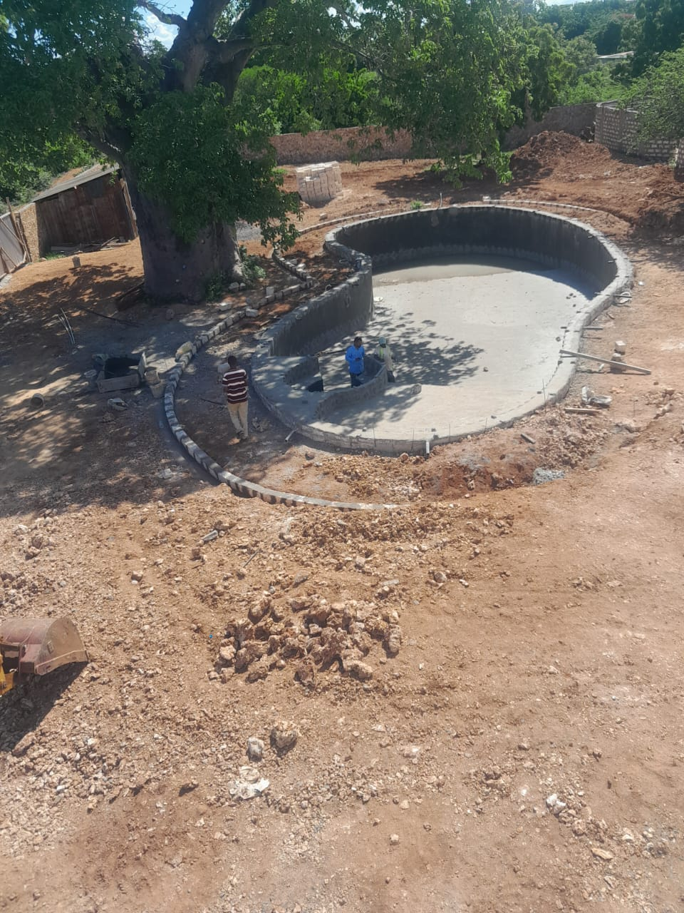
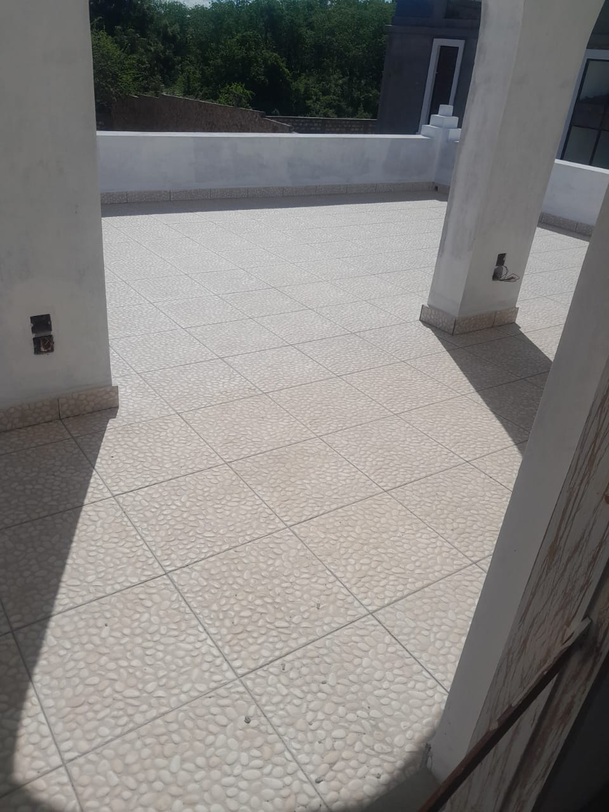

Waterproofing Solutions
Secure, Durable, and Long-Lasting Protection for Your Structures.
At JOOP Services & Engineering Works, we offer professional waterproofing services to protect buildings and infrastructure from water ingress, structural damage, and premature deterioration. With extensive experience and advanced materials, we ensure watertight performance across a variety of structures.
Our Waterproofing Services Include:
- 1. Basement & Foundation Waterproofing
- 2. Roof Waterproofing
- 3. Wet Areas (Bathrooms, Kitchens)
- 4. Water Tank Waterproofing
- 5. Balcony & Terrace Waterproofing
- 6. Expansion Joint Waterproofing
- 7. Concrete Tank & Retaining Wall Sealing



